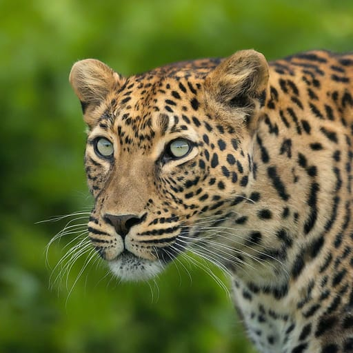
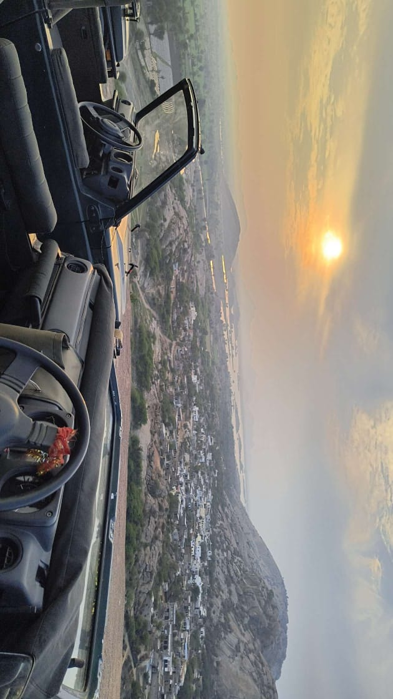
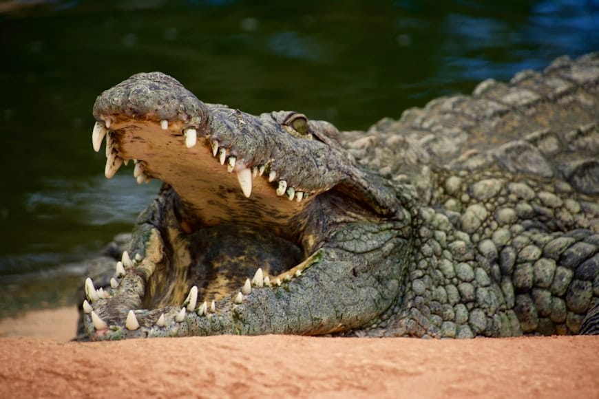
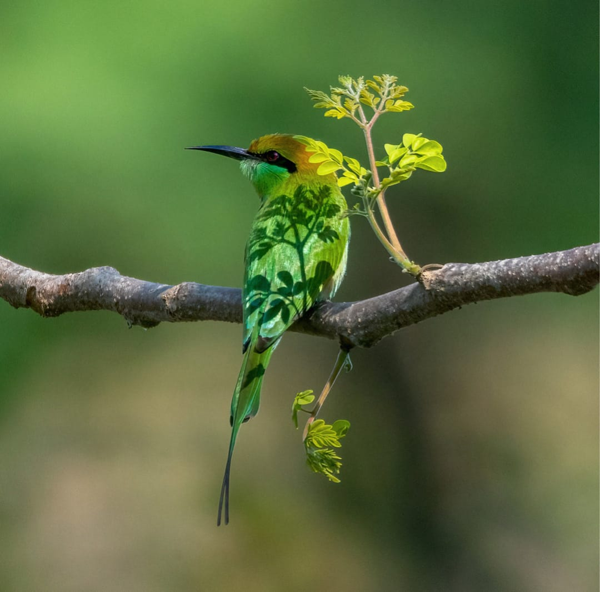
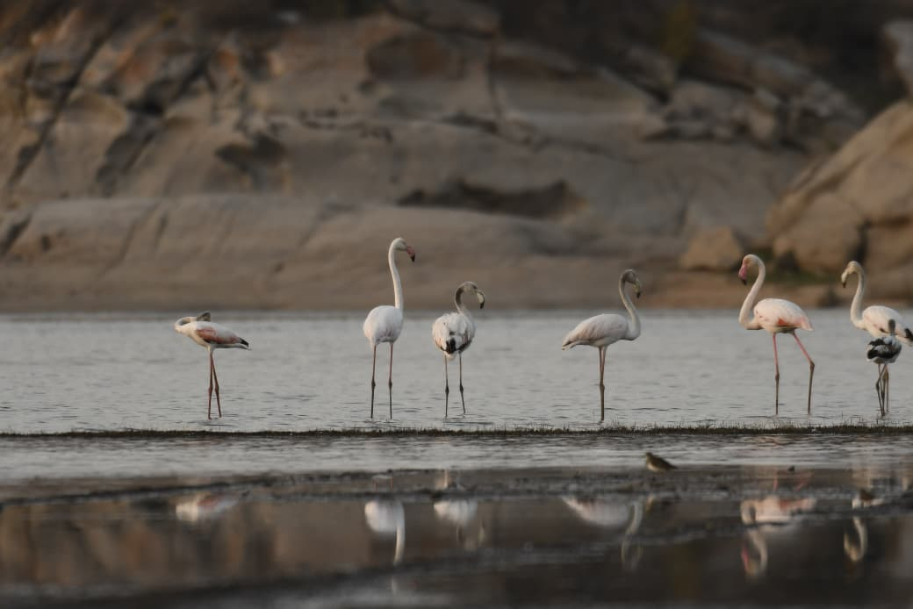
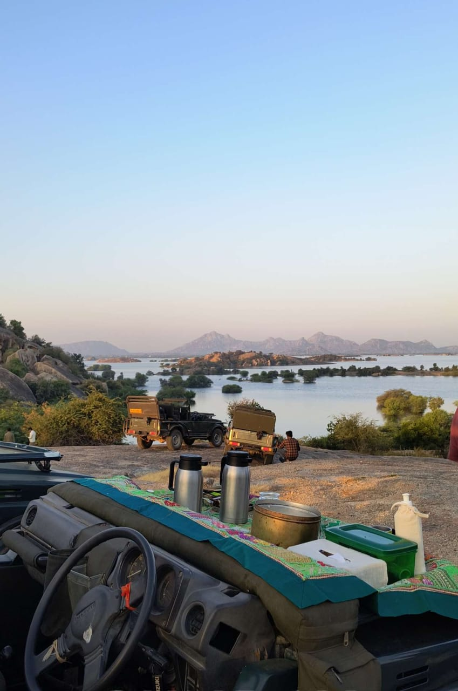

JAWAI LEOPARD SAFARI & STAY
Welcome to Jawai Anop Villa – your gateway to an unforgettable Jawai Leopard Safari. Explore the beauty of Rajasthan’s wildlife with our guided Jawai Safari tours and comfortable stay.
GALLERY
SERVICES
LEOPARDS
Jawai (leopard hills of india) where the elusive leopards roam freely in a extraordinary landscape that combines rugged hills, wide jungles and ancient temples.
CAMPING
Experience the serene charm of Jawai with our luxury camps. Wake up beside the peaceful Jawai Dam, embraced by rugged hills and wilderness. Enjoy starlit nights, warm bonfires, and calm moments after a thrilling safari.
SUNSET SAFARI
Watch the Jawai sunset from granite hills as the sky glows gold. Our evening gypsy rides lead you to scenic spots where nature’s peace and wild beauty unite.

MUGGER
Jawai is also home to another formidable predator: the indian Mugger Crocodile.The Jawai Dam, one of the largest reservoirs in western Rajasthan.

BIRD WATCHING
Jawai is a haven for bird lovers, hosting countless migratory and resident species. Spot eagles, kingfishers, and rare birds near the dam amid nature’s serene melody.

FLAMINGOS
In winter, flamingos grace Jawai Dam, turning the waters pink with their elegance — a captivating sight for every nature lover.

HIGH TEA
Enjoy a serene high tea experience atop the Jawai hills. Sip freshly brewed tea or coffee while gazing at panoramic landscapes. It’s the perfect way to unwind after an adventurous day — where luxury meets wilderness.

LOCATION
FAQs
Jawai Safari is located in the Jawai region of Pali District, Rajasthan, near the small village of Sena. Surrounded by granite hills and the Jawai Dam. The area is known for its wild leopards that roam freely in the rocky landscape.
You can book your Jawai Leopard Safari through our Whatsapp or by calling our booking team. Share your dates and number of guests. Advance booking is recommended, especially during weekends and holidays. Morning and evening jeep safaris are available, and we help you choose the best slot for leopard sightings.
Jodhpur to Jawai Leopard Safari: 150 km (2.5 hours by road)
Udaipur to Jawai Safari: 156 km (3 hours
by
road)
Jaipur to Jawai Safari: 395 km (6–7 hours by road)
Mount Abu to Jawai Safari: 120 km (2.5
hours
by road)
Ahmedabad to Jawai Safari: 300 km (6 hours by road)
The cost of a typical Jawai Safari is around ₹4,000 per gypsy, which can accommodate up to 6 people. Prices may vary slightly depending on the season, time of booking. Morning and evening safaris are both available, offering a chance to spot leopards and other wildlife in their natural rocky habitat.
Morning safaris usually run from 5:30 AM to 8:30 AM, while evening safaris are from 4:30 PM to 7:00 PM (timings vary slightly by season). Early morning safaris offer the best chance to spot leopards when they return from their night hunts.
Wear comfortable cotton clothes in earthy tones (khaki, brown, or green). Avoid bright colors. Carry sunglasses, a hat, sunscream and a light jacket during winter mornings. Don’t forget your camera!
Absolutely! Jawai is one of India’s best places to see leopards in the wild, with almost guaranteed sightings. The peaceful environment, local culture, and untouched nature make it a memorable experience for wildlife lovers.
Each safari lasts around 2.5 to 3 hours. You’ll explore multiple zones, stop for photography, and enjoy scenic views around the Jawai Dam and surrounding hills.
Jawai Safari is a wildlife experience where you can spot leopards in their natural rocky habitat. Unlike a zoo, these safaris happen in open jeeps guided by local experts who know the leopard zones well. You may also see crocodiles, migratory birds, and other animals around the Jawai Dam area.
Yes, many guests do both for better chances of spotting leopards.
Yes, Safaris are family-friendly and safe.
1. Sunrise Leopard Safari
2. Sunset Leopard Safari
3. Full-Day Leopard Safari
4. Private
Leopard Safari